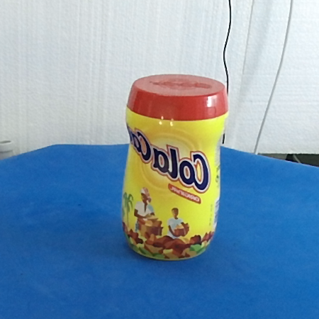
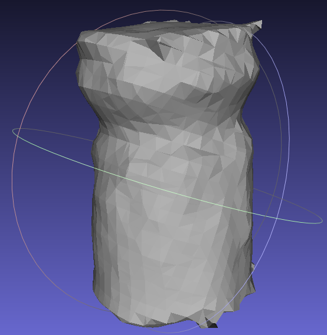

Interactive 3D object recognition pipeline
on mobile GPGPU computing platforms using low-cost RGB-D sensors
In this work, we propose the implementation of a 3D object recognition system which will be optimized to operate under demanding time constraints. The system must be robust so that objects can be recognized properly in poor light conditions and cluttered scenes with significant levels of occlusion.
An important requirement must be met: the system must exhibit a reasonable performance running on a low power consumption mobile GPU computing platform (NVIDIA Jetson TK1) so that it can be integrated in mobile robotics systems, ambient intelligence or ambient assisted living applications. The acquisition system is based on the use of color and depth (RGB-D) data streams provided by low-cost 3D sensors like Microsoft Kinect or PrimeSense Carmine.
The resulting system is able to recognize objects in a scene in less than 7 seconds, offering an interactive frame rate and thus allowing its deployment on a mobile robotic platform. Because of that, the system has many possible applications, ranging from mobile robot navigation and semantic scene labeling to human-computer interaction (HCI) systems based on visual information.
A custom 3D dataset was created for evaluating the performance of our proposed system, a detailed view of the dataset can be found here
 
In addition, the source code of the system is distributed under an open-source license in the following GitHub repository: object-recognition